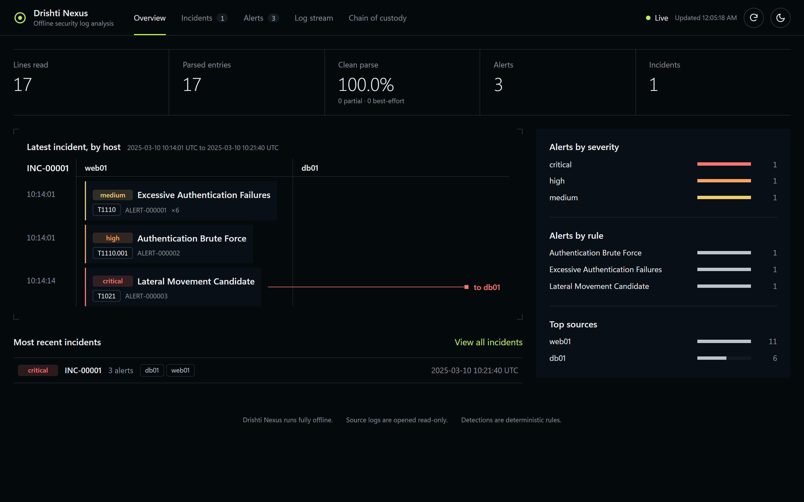

Find the intrusion with the network unplugged
One Go binary reads your logs read-only and explains every alert.

Two hosts, one incident
The bundled demo: a password guessed on web01, then used on db01.
Run this demo$ drishti analyze testdata/fixtures/multihost
Evidence: testdata\fixtures\multihost\db01\auth.log
SHA-256: 314a29428138e73d843f7dbb07103df28aeaabf3c6c648d7cffc43e0e429fff6 (658 bytes, opened read-only)
Evidence: testdata\fixtures\multihost\web01\auth.log
SHA-256: d72ac2f946bc7fa8751f3444a085bf6c6933b06ca319fc1ea599a5fbc969ac59 (1177 bytes, opened read-only)
Audit session: a9556e01ff5fac2cO_RDONLY.
INC-00001
10 March 2025, UTC
web01
6 failed, then accepted
db01
7m 26s
login
- T1110
- Excessive failures, medium
- T1110.001
- Brute force, high
- T1021
- Lateral movement, critical
[2025-03-10 10:14:14Z] Lateral Movement Candidate (ALERT-000003, INC-00001, x1) [T1021: Lateral Movement]
Severity: CRITICAL
Evidence: testdata/fixtures/multihost/web01/auth.log:9, testdata/fixtures/multihost/db01/auth.log:3
✓ Evidence unchanged after analysis: testdata\fixtures\multihost\db01\auth.log
✓ Evidence unchanged after analysis: testdata\fixtures\multihost\web01\auth.log
$ drishti audit verify
✓ drishti_audit.log: 2 records, 1 sessions — hash chain intactEvery rule names its technique
One ATT&CK tag per rule, set only where the logic supports it.
- T1110.001
- Authentication brute force
- T1110
- Excessive authentication failures
- T1548
- Privilege escalation indicator
- T1059
- Suspicious command execution
- T1190
- Injection pattern detected
- T1078
- Time-based anomaly, as context
- T1021
- Lateral movement candidate
Measured on public logs, each phase
LogHub, OTRF Mordor and a 50,000-line benign set. Sources in BASELINE.md.
| Measure | Phase 0 | Phase 2 |
|---|---|---|
| Alerts on 50,000 benign lines | 28,494 | 46 |
| Legitimate sudo and su lines flagged | 17,610 alerts | 0 |
| loghub-ssh lines read by a format parser | 0% | 100% |
| rpc.statd exploit attempts in loghub-linux | Not detected | 7 of 7, no false positives |
| Mimikatz LSASS read in mordor-mimikatz | 0 alerts | Detected, T1003.001 |
AI summaries are off unless you ask, run locally, and are checked against the alert facts.
Loopback endpoints only. Unsupported claims are listed and the summary marked unverified. How the check works
Build it and run the demo
- Go
- 1.23 or later
- Runs on
- Windows, Linux, macOS
- At run time
- No network, no install
git clone https://github.com/vaibhavbaviskar21/Drishti-Nexus.git
cd Drishti-Nexus
go build -o bin/drishti ./cmd/drishti
./bin/drishti analyze testdata/fixtures/multihost
./bin/drishti serve testdata/fixtures/multihost
./bin/drishti audit verifyOn Windows, .\scripts\build.ps1 writes bin\drishti.exe.